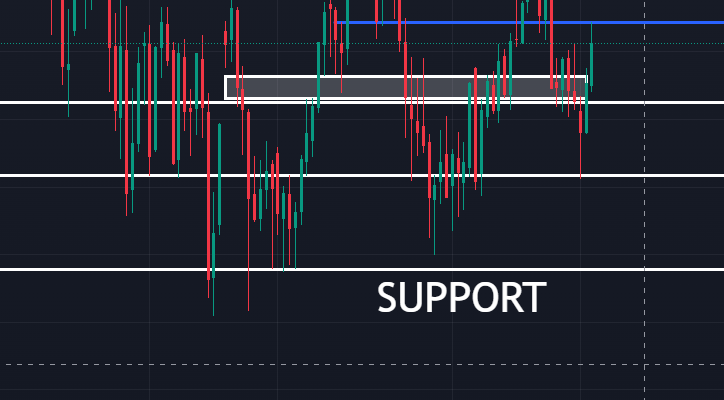
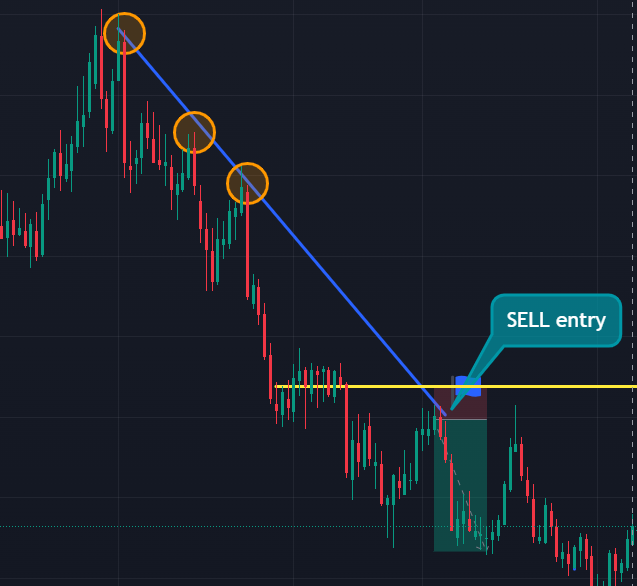
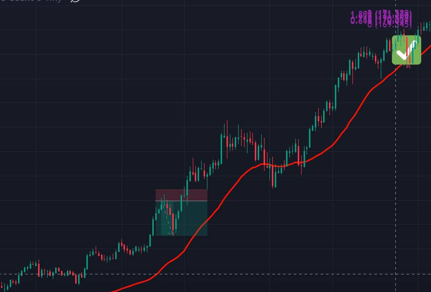
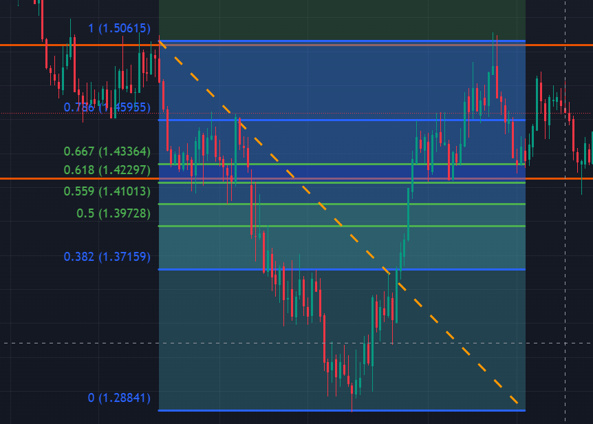
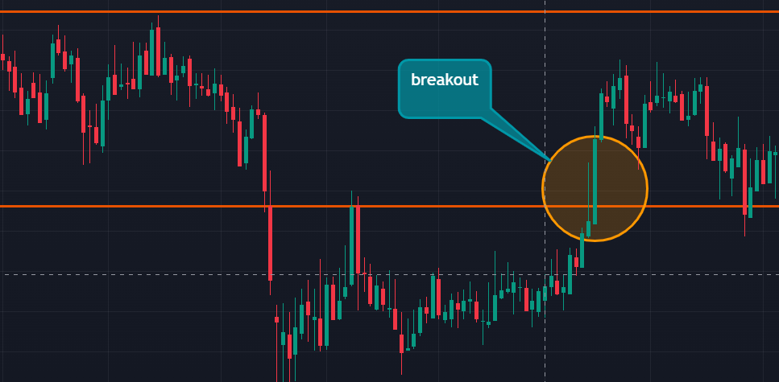
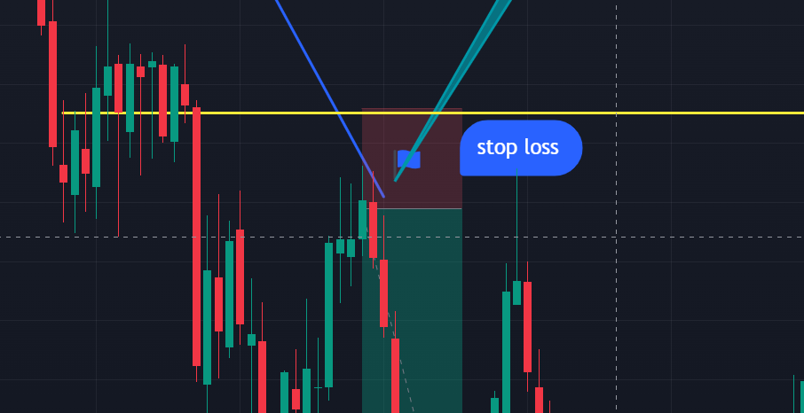
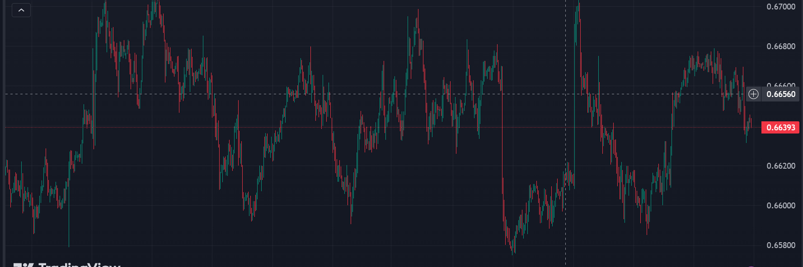
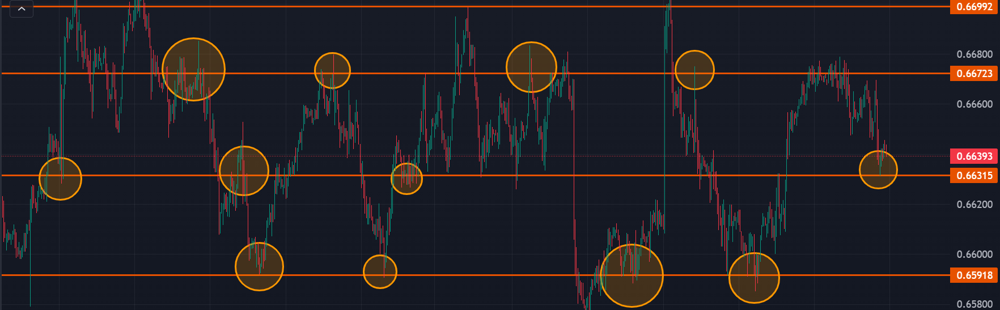

Support and Resistance
Understanding Support and Resistance
Support: A price level where a downtrend can be expected to pause due to a concentration of demand.
Resistance: A price level where an uptrend can be expected to pause due to a concentration of supply.
Importance of Support and Resistance
Trend Identification: Helps in identifying market trends by analyzing how price reacts at key levels.
Entry and Exit Points: Assists in determining optimal entry and exit points for trades based on price reactions.
Risk Management: Helps in setting stop-loss orders and profit targets to manage risk effectively.
Types of Support and Resistance Levels
Horizontal Levels: Static price levels that remain consistent over time and often act as psychological barriers.
Trendlines: Dynamic support and resistance levels that change with price movement, forming lines along price trends.
Moving Averages: Technical indicators that smooth out price data, acting as dynamic support and resistance levels.
Fibonacci Levels: Derived from Fibonacci retracement, these levels indicate potential support and resistance zones.
Application of Support and Resistance
Breakouts: When price breaks through a support or resistance level, it often indicates the start of a new trend.
Stop-Loss Placement: Support and resistance levels help in placing stop-loss orders to limit potential losses.
Practical Example
How to draw support and resistance:
1/ Zoom out the chart 10 times
2/ Draw the most obvious levels ( TO GET MORE TOUCHES OF THE PATTERNES 3 > 0 )
3/ Adjust the levels
Example Strategy: Using Support and Resistance for Entries
Market: EUR/USD
Time Frame: 4-hour chart
Entry Criteria:
- Enter a buy trade when the price reaches a well-established support level and shows signs of bouncing.
- Enter a sell trade when the price reaches a well-established resistance level and shows signs of reversing.
Exit Criteria:
- Exit the trade when the price reaches the next significant support or resistance level.
Risk Management:
- Set a stop-loss order below the support level for buy trades and above the resistance level for sell trades.
- Risk no more than 2% of the trading account on each trade.
Profit Target:
- Take profit at the next support or resistance level, or adjust based on price action.